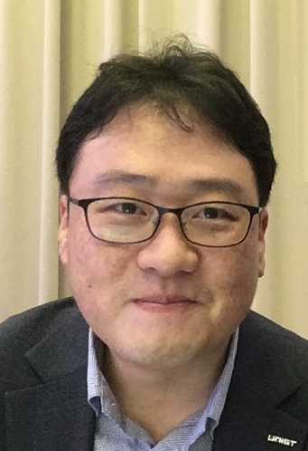

Jaesik Choi is an associate professor of Graduate School of Artificial Intelligence at KAIST since September 2019. He is CEO of INEEJI founded in January 2019. He received a prime minister’s commendation in April 2019. He is also a director of the Explainable Artificial Intelligent Center established by the Ministry of Science and ICT, Republic of Korea. He had been the Rising-Star Distinguished associate professor in the School of Electrical and Computer Engineering at UNIST (Ulsan, Korea) and an affiliate researcher of the Lawrence Berkeley National Laboratory (the Berkeley Lab) until August 2019. He had been an assistant professor at UNIST from July 2013 to August 2017. He was a Computer Scientist Postdoctoral Fellow of the Computational Research Division at the Berkeley Lab. His research focuses on learning and inference with large scale, complex systems, explainable machine learning models and spatio-temporal data analysis. He received his Ph.D. in Computer Science from the University of Illinois at Urbana-Champaign (2012) and received B.S. degree in Computer Engineering from Seoul National University (2004).
Short Abstract: Explainable and interpretable machine learning models and algorithms are important topics which have received growing attention from research, application and administration. Many advanced artificial intelligence systems are often perceived as black-boxes. Many government agencies pay special attention to the topic. As an example, the EU enacted the General Data Protection Regulation (GDPR) which mandates a right to explanation from machine learning models in May 2018. In this talk, I will overview recent advances of explainable artificial intelligence and industrial applications in Korea.